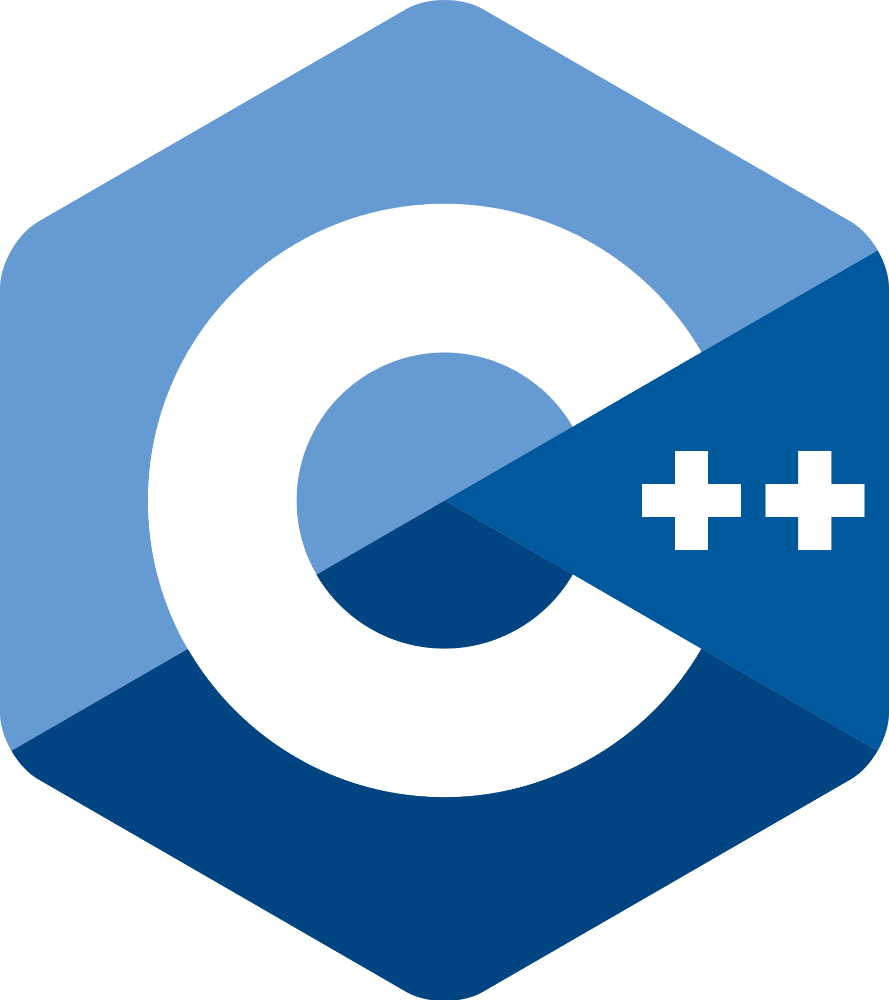
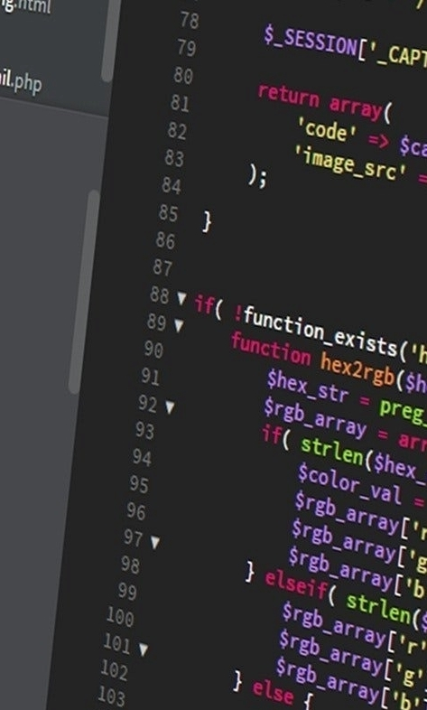

L' Indirizzo Informatico
L'attività del tecnico in Informatico comprende la progettazione, programmazione e la gestione di sistemi informatici. Conosce le fasi della gestione dei progetti e il ciclo di vita delle applicazioni, con particolare riguardo alle normative nazionali e internazionali relative alla sicurezza e alla protezione delle informazioni. E' in grado di interagire e comunicare efficacemente in un contesto di lavoro cooperativo; l'ottima conoscenza dell'inglese tecnico specifico del settore gli consente di utilizzare e di redigere manuali d'uso per software, apparati e di inserirsi in ambienti di lavoro internazionali. Durante il corso di studio ha la possibilità di verificare sul campo le sue competenze attraverso gli strumenti didattici dello stage, del tirocinio aziendale e dell'alternanza scuola-lavoro, fondamentali per imparare fin da subito le basi del lavoro.



IL PROFILO
Il tecnico in Informatica
1) Descrive e confronta il funzionamento di strumenti informatici e sapendoli collocare correttamente in un contesto e sapendo muoversi tra l'ambito proprietario e quello open-source; 2) Gestisce progetti nelle varie asi del ciclo di sviluppo, dalla progettazione dell'architettura del prodotto o del servizio fino alla documentazione dei requisiti; 3) Sviluppa applicazioni informatiche progettando e implementando software di differente complessità con diversi stili di programmazione e tipologie di strutture dati, sapendo scegliere le metodologie e gli strumenti più idonei; questa competenza si esplica anche nello sviluppo di applicazioni per reti locali o servizi a distanza, come la realizzazione di software client/server basato sul web con l'integrazione di basi di dati; 4) Sviluppa e gestisce siti web statici e dinamici utilizzando gli strumenti più idonei ed aggiornati, tenendo conto degli aspetti innovativi che riguardano la comunicazione multimediale mediante approcci basati su tecnologie web 2.0; 5) E' in grado di configurare e gestire sistemi di elaborazione dati e reti; 6) Sa operare nel rispetto delle normative inerenti la sicurezza del lavoro e degli ambienti, individuando le cause di rischio e applicando le norme nazionali e internazionali.
Info Utili
Questo sito è stato realizzato usando: HTML5, CSS e JavaScript.